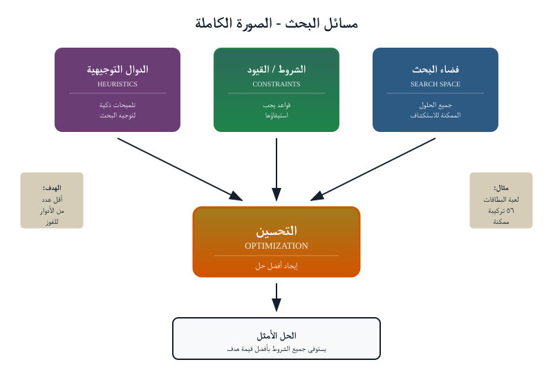
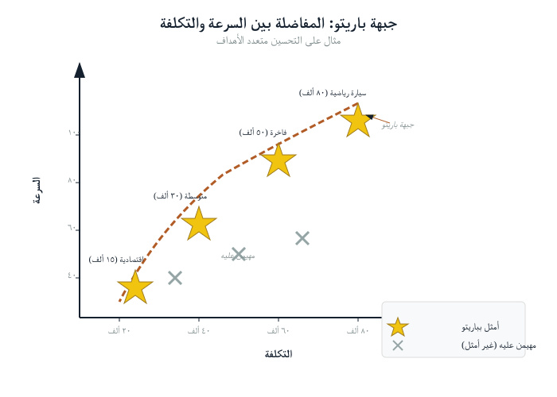
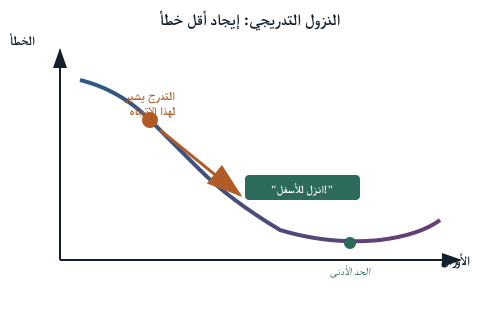
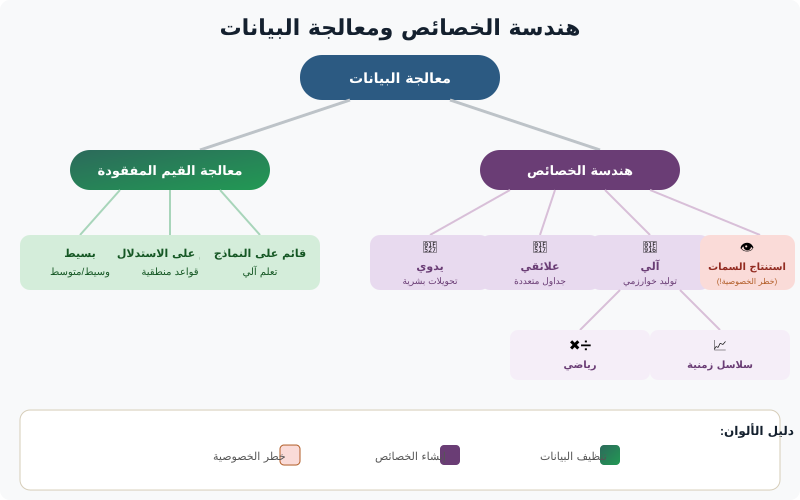
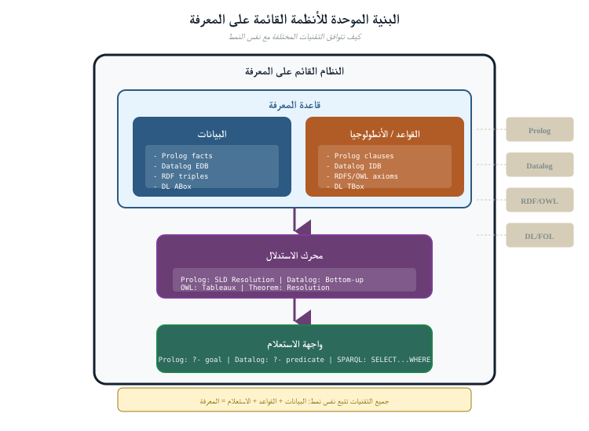
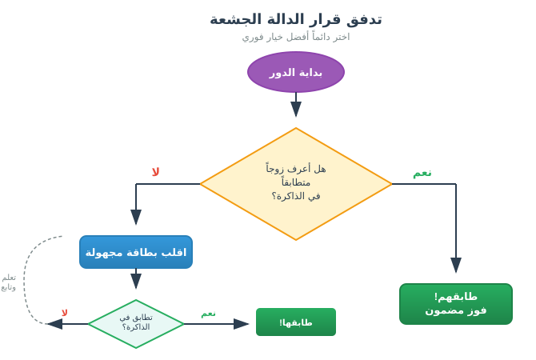

ما سنغطيه
- لماذا البناء داخلياً — تتلاقى الحيازة والمقبولية والخصوصية
- الذكاء الاصطناعي صندوق أدوات — العائلات الست والخريطة
- إرضاء القيود والأمثلة — الخطوط الزمنية والفرز (النشاط ١)
- تعلّم الآلة — حدّ القرار (النشاط ٢)
- إعداد البيانات — مدخلات رديئة، مخرجات رديئة
- تقييم تعلّم الآلة — الدقّة والاستدعاء وفخّ الإيجابيات الكاذبة
- الاستدلال المعرفي ونمذجة الموضوعات والبحث — الثلاثي القابل للتفسير
- دمج الأدوات في خط معالجة — بحث ← موضوعات ← تصنيف ← إرضاء قيود ← قواعد
- الخلاصة والجسر إلى الجزء الخامس
لماذا البناء داخلياً
تتلاقى ثلاث قوى من الأجزاء السابقة عند النتيجة نفسها. الحيازة: الدليل الذي يغادر سيطرتك هو دليل قد لا يعود بإمكانك الاعتماد عليه — فلحظة رفع صورة قرص إلى طرف ثالث، تكون قد أنشأت نسخة لا يمكنك تفسيرها تماماً، وثغرةً في السلسلة سيتفحصها محامي الخصم. المقبولية: الأسلوب الذي لا تستطيع تفسيره قد يكون غير مقبول بصرف النظر عن دقته؛ فالمحاكم تسأل بازدياد لا عمّا استنتجته الأداة وحسب بل كيف، و"قرّر نموذج البائع السحابي ذلك" نادراً ما يكون جواباً مُرضياً. الخصوصية: الخدمة الخارجية هي بحد ذاتها جامعة للبيانات، وفي قضية جنائية رقمية غالباً ما تكون البيانات أكثر المواد حساسيةً يمكن تخيّلها — صور حميمة، وسجلات طبية، ومراسلات أطراف ثالثة لا علاقة لهم بالقضية. إن بناء أدوات تحليلك الخاصة يجيب عن هذه الثلاثة دفعةً واحدة: البيانات لا تتحرك أبداً، والمنطق قابل للفحص، ولا يوجد طرف ثالث في الحلقة.
ضع القوى الثلاث جنباً إلى جنب وستلاحظ أنها ليست ثلاثة هموم منفصلة بل هَمّاً واحداً يُرى من ثلاث زوايا. الحيازة عن أين تكون البيانات؛ والمقبولية عن ما إن كنت تستطيع الدفاع عمّا فعلته بها؛ والخصوصية عن من سواك يستطيع الآن رؤيتها. إن أداةً داخلية تُشغَّل محلياً على محطة عمل تسيطر عليها تطوي الثلاثة جميعاً في ادّعاء واحد قابل للجواب: بقي الدليل على هذا الجهاز، وهذا هو الكود الدقيق الذي عالجه، ولم يلمسه أحد خارج التحقيق قط.
"داخلي" لا يعني "بدائي". إن حلّال القيود، أو فهرس البحث، أو نموذج الموضوعات الذي يُشغَّل محلياً ناضج وسريع ومفهوم جيداً — وكثير منه برمجيات مفتوحة المصدر مجرّبة منذ عقود. المقايضة التي تجريها هي التخلي عن الراحة مقابل السيطرة — وفي العمل الجنائي الرقمي، السيطرة هي المتطلب لا الترف.
للنقاش
فكّر في مهمة تحقيقية واحدة قد تُغريك بتسليمها لخدمة ذكاء اصطناعي سحابية غداً. سِر في القوى الثلاث بالتتابع: ماذا يحدث لـالحيازة حين تغادر البيانات المبنى؟ أيمكنك تفسير الأسلوب لقاضٍ من أجل المقبولية؟ خصوصية مَن، عدا المشتبه به، تركب في ذلك الرفع؟ أيٌّ من الثلاث سيحجب الرفع أولاً؟
الذكاء الاصطناعي صندوق أدوات
كل أداة أدناه تناسب شكلاً مختلفاً من المشكلات. والمهارة هي في مطابقة السؤال بالأداة، والقدرة على بيان السبب. روبوت الدردشة تعبير واحد عن إحدى هذه العائلات؛ وهو ليس صندوق الأدوات. تتناول الأقسام المتبقية الأدوات واحدةً تلو الأخرى، كل واحدة بمثال جنائي رقمي تطبيقي، وقاعدةٍ من سطر واحد لمتى تلجأ إليها ومتى لا، وملاحظةٍ عن كيفية تشغيلها محلياً. وهذه هي الخريطة:
| الأداة | جيدة لـ | الاستخدام الجنائي الرقمي |
|---|---|---|
| إرضاء القيود | "إيجاد إسناد يحقق جميع القواعد" | التحقق من اتساق الخط الزمني / حجة الغياب |
| الأمثلة | "إيجاد أفضل خيار في ظل المفاضلات" | ترتيب أولويات ما يُفحص أولاً |
| تعلّم الآلة | "تعلّم نمط من الأمثلة" | تصنيف الملفات والتنبيه إلى الشذوذ |
| المعرفة والاستدلال | "تطبيق قواعد خبراء صريحة" | استدلال قابل للتفسير وقابل للتدقيق |
| نمذجة الموضوعات | "إيجاد الموضوعات في كومة نصوص كبيرة" | فرز الرسائل/المستندات المحجوزة |
| محركات البحث | "الفهرسة والاسترجاع بسرعة" | الاستعلام عن تيرابايتات من الأثريات الرقمية |
ملاحظة للمدرّب
قاوم رغبة محاضرة العائلات الست كلها سلفاً — أبقِ هذا القسم في حدود ١٠ دقائق بوصفه خريطة، ثم دع كل عائلة تستحق تفصيلها في قسمها الخاص. إن كانت القاعة غير تقنية، فالجملة الوحيدة التي يجب أن تصل هي "تعلّم الآلة أداة واحدة من ست، وغالباً ليست الأكثر قابلية للدفاع". وإن كانت القاعة تقنية، فاسأل أي عائلة يلجؤون إليها بالعادة ولماذا — وغالباً ما تكون العادة هي تعلّم الآلة، وهذه بالضبط العادة التي بُني هذا الجزء ليوسّعها.
إرضاء القيود
تتحدد مسألة إرضاء القيود (CSP) بمتغيرات، والقيم التي يمكن أن تأخذها، والقيود التي تربط بينها؛ ويجد الحلّال إسناداً يحقق جميع القيود (أو يثبت عدم وجود حلّ). إنها النموذج الطبيعي لأسئلة الاتساق — الأسئلة التي لا تحتاج فيها إلى الجواب الأفضل الوحيد، بل تحتاج أن تعرف ما إن كان أيّ جواب ممكناً أصلاً.

إعادة بناء الخط الزمني هي مسألة إرضاء قيود. فكل حدث يجب أن يقع في نافذة زمنية؛ وبعض الأحداث يجب أن تسبق غيرها؛ ولا يمكن أن يكون جهاز في مكانين في آنٍ واحد. أدخِل ذلك بوصفه قيوداً، فيخبرك الحلّال بأي الترتيبات ممكنة — وبقوة، أي تسلسل مقترح للأحداث مستحيل، بما يناقض حجة غياب.
مثال تطبيقي. يدّعي مشتبه به أنه كان في منزله (سمِّه برج الخلوي A) من التاسعة إلى الحادية عشرة مساءً. يقدّم الدليل أربع وقائع ثابتة: رسالة نصية أُرسلت من هاتفه بلغت البرج B عند الساعة ٩:٤٠؛ ولقطة كاميرا مراقبة مؤرّخة ١٠:٠٥ تُظهر سيارته قرب متجر يخدمه البرج C؛ والبرجان B وC يبعدان ١٢ كيلومتراً؛ والمنزل (البرج A) يبعد ٩ كيلومترات عن B. انمذِج كل مشاهدة مؤرّخة بوصفها متغيراً قيمته زوج (موقع، زمن)، وأضِف القيود الفيزيائية — لا يمكنك قطع ١٢ كيلومتراً في الفجوات المتاحة، ولا يمكنك التسجيل على برجين في آنٍ واحد. لا "يقرر" الحلّال أن المشتبه به يكذب؛ بل يبلّغ أنه لا يوجد إسناد يحقق "في المنزل طوال المساء" مع رسالة البرج B ولقطة الكاميرا معاً. لا تَضعُف حجة الغياب برأيٍ — بل تُناقَض بالهندسة، ويمكنك أن تشير إلى القيد الدقيق الذي فعل ذلك.
مسائل إرضاء القيود قابلة للتفسير تماماً: فالجواب إسناد ملموس، ويمكنك تتبع أي قيد استبعد كل بديل. وتلك القابلية للتدقيق هي بالضبط ما تكافئه المقبولية.
متى تُستخدم / متى لا: الجأ إلى مسألة إرضاء قيود حين يكون السؤال "هل هذا متسق؟" مع قواعد صارمة ومجموعة منتهية من الخيارات؛ ولا تستخدمها حين تكون القواعد تفضيلات مرنة أو احتمالات ضبابية (فتلك من شأن الأمثلة أو تعلّم الآلة)، لأن مسألة إرضاء قيود مُرغمة على التعبير عن "غالباً" تفقد جوابها النظيف القابل للدفاع.
تشغيلها محلياً: تعمل الحلّالات الناضجة مفتوحة المصدر (مكتبات القيود المرفقة بلغات البرمجة الشائعة، أو الحلّالات المستقلة) بالكامل على محطة عملك. تسلّمها نموذجاً نصياً بسيطاً للمتغيرات والقيود؛ ولا يغادر الجهازَ أي شيء عن القضية، ويصبح ملف النموذج نفسه أثراً موثّقاً قابلاً للاستنساخ يمكنك الإفصاح عنه.
النشاط ١ — انمذِج خطاً زمنياً كمسألة إرضاء قيود على الورق (ثنائياً)
خُذ المثال التطبيقي أعلاه. على الورق، عدِّد المتغيرات (واحد لكل مشاهدة مؤرّخة)، والقيم التي يمكن أن يأخذها كل منها (أي برج، وأي نافذة زمنية)، والقيود (زمن الانتقال بين الأبراج، و"برج واحد في كل مرة"، والنافذة التي ادّعاها المشتبه به). ثم، يدوياً، حاول إيجاد أي إسناد يُبقيه في المنزل طوال المساء.
حين تفشل، اكتب الجملة الوحيدة التي ستقولها في المحكمة: "لا يمكن أن تكون هاتان المشاهدتان صحيحتين معاً إن لم يغادر قط، لأنّ…". تلك الجملة — التي تسمّي القيد الدقيق المنكسر — هي ما يجعل مسألة إرضاء القيود مقبولة حيث لا يكون الصندوق الأسود كذلك.
الأمثلة والمفاضلات
تبحث الأمثلة عن أفضل خيار في ظل دالة هدف — رقم وحيد يقيّم مدى جودة الخيار. ومعظم القرارات الواقعية تفاضل بين أهداف متنافسة (السرعة مقابل الشمولية، التغطية مقابل التكلفة)، فتعطي لا جواباً أفضل وحيداً بل جبهة Pareto من التسويات القابلة للدفاع.

جرّبه: يتيح لك عرض دالة الهدف تشكيل دالة تقييم ومشاهدة "أفضل" خيار يتحرك مع تغيّر الأولويات — الوجه اليومي لكل قرار فرز يتخذه المحقق.
مثال تطبيقي. تحجز مداهمةٌ تسعة أجهزة، ولديك محلّلان ليوم واحد. لكل جهاز قيمة مقدَّرة (مدى ترجيح أنه يحمل دليلاً حاسماً، من الاستخبارات ونوع الجهاز) وتكلفة (ساعات التصوير والفحص). رمِّز "الدليل المتوقع لكل ساعة محلّل" بوصفه الهدف، ودع المُحسِّن يرتّب الأجهزة. قد يخبرك أن تبدأ بهاتف المشتبه به وحاسوب محمول واحد — قيمة عالية، تكلفة معتدلة — وأن تؤجّل خادم تخزين شبكي سعته ٤ تيرابايت عائده غير مؤكد وتكلفته هائلة. والأهم، حين تغيّر الهدف (لنقُل إن القضية انعطفت وصارت الصور أهم من الرسائل)، يتبدّل الترتيب، ويمكنك أن تُظهر لماذا كان ترتيب فحصك عقلانياً وقت اخترته. الأمثلة هنا ليست إيجاد "الجواب"؛ بل جعل الفرز قراراً مكتوباً قابلاً للدفاع بدل حدس باطني.
النشاط ٢ — سابِق بين الاستراتيجيات، ثم زِن التكلفة
افتح عرض البحث الاستدلالي وشغّل اللغز نفسه تحت كل استراتيجية بالتتابع: الجشع، والجشع-إبسيلون، والعشوائية، والقوة الغاشمة. لاحظ كم خطوة تأخذ كل واحدة وما إن كانت تجد أفضل جواب.
- أيّ استراتيجية تبلغ جواباً جيداً أسرع؟ وأيّها مضمونة إيجاد الأفضل لكنها الأبطأ؟
- مفاضلة تكلفة الاستدلال: استدلالٌ ذكي يوفّر خطوات بحث، لكن حساب الاستدلال نفسه يكلّف شيئاً. أوجِد الحالة التي تفوز فيها استراتيجية أرخص وأغبى إجمالاً لأن الذكية تنفق على التفكير أكثر مما توفّر.
اكتب جملة واحدة تربط هذا بالفرز: متى يستحق الأمر بناء نموذج تقييم متقن، ومتى ينبغي أن تبدأ بتصوير الهاتف البديهي وحسب؟
متى تُستخدم / متى لا: استخدم الأمثلة حين يتعيّن عليك الاختيار بين خيارات ذات مفاضلات قابلة للقياس وموارد محدودة؛ ولا تستخدمها حين لا يكون "التقييم" قابلاً للقياس الكمي بصدق — فدالة هدف ملفّقة تغسل تخميناً وتحوّله إلى رقم، وهي أسوأ من الاعتراف بأنك خمّنت.
تشغيلها محلياً: إجراءات الأمثلة كود اعتيادي يعمل على جدول بياناتك الخاص بالأجهزة والتقديرات. ولا يُحتاج إلى أي محتوى دليل — فقط تقديراتك للقيمة والتكلفة — فهي من أيسر الأدوات تشغيلاً على جهاز معزول وإفصاحاً عنها بالكامل.
تعلّم الآلة
يتعلّم تعلّم الآلة نمطاً من أمثلة موسومة (مُشرَف عليه)، أو يجمّع بيانات غير موسومة (غير مُشرَف عليه)، أو يتحسّن من التغذية الراجعة (تعزيزي). وفي التحقيق الجنائي الرقمي يتألق في مهام النطاق الواسع: تصنيف أنواع الملفات، وكشف الصور غير المشروعة المعروفة، وعنقدة الأثريات المتشابهة، والتنبيه إلى الشذوذ الإحصائي في السجلات.

انظر إلى الحدّ: يُظهر التصوّر المرئي لتعلّم الآلة وعرض التصنيف كيف يرسم النموذج حدّ قرار بين الأصناف، ويفتح عرض دوال التنشيط العصبون الذي يجعل الشبكة العصبية تثني ذلك الحدّ.
مثال تطبيقي. لديك ٢٠٠٬٠٠٠ صورة من قرص محجوز، وتحتاج إلى إبراز القليل الذي يُظهر، لنقُل، أسلحة نارية. يُسجّل مصنّفٌ مُشرَف عليه مُدرَّب على أمثلة موسومة كل صورة، ويعيد ١٬٨٠٠ صورة يحكم بأنها الأرجح. هذا موفّر حقيقي للوقت — إذ يراجع محلّل الآن ١٬٨٠٠ بدل ٢٠٠٬٠٠٠. لكن لاحظ ما فعله النموذج وما لم يفعله: لقد أنتج قائمة مرشحين مرتّبة، لا نتيجة. فبعض تلك الـ١٬٨٠٠ ستكون مثاقب كهربائية وألعاب مسدسات؛ وبعض الأسلحة النارية الحقيقية ستقع تحت حدّ القطع. تنتهي مهمة النموذج عند "انظر هنا أولاً"؛ ويتّخذ إنسانٌ كل قرار فعلي، والسجل القابل للتفسير هو مراجعة المحلّل، لا درجة ثقة النموذج.

النشاط ٣ — أوجِد حدّ القرار (وحرّكه)
في التصوّر المرئي لتعلّم الآلة أو عرض التصنيف، أضِف بضع نقاط وشاهد الحدّ الذي يرسمه النموذج. الآن اسحب نقطة عبر الخط، أو أضِف قيمة شاذّة، وانظر الحدّ ينثني. اسأل: كم نقطة تدريب مغلوطة الوسم تلزم لدفع الحدّ إلى مكان مُضلِّل؟ تلك الهشاشة هي السبب في أن مخرجات تعلّم الآلة خيط يُتحقق منه، لا حكم أبداً.
استخدم تعلّم الآلة بعينين مفتوحتين. يمكن للنموذج أن يكون مخطئاً بثقة، و"المصنّف قال كذا" ليس تفسيراً تقبله المحكمة. عامِل مخرجات تعلّم الآلة بوصفها خيطاً يُتحقق منه، لا حكماً — وأبقِ إنساناً وفحصاً قابلاً للتفسير في الحلقة.
متى تُستخدم / متى لا: استخدم تعلّم الآلة للفرز والترتيب على نطاق لا يبلغه البشر يدوياً؛ ولا تستخدم مخرجاته بوصفها نتيجة قائمة بذاتها، ولا تنشر نموذجاً لا تستطيع وصفه والتحقق منه على بيانات محتجَزة وتحديد حدود خطئه.
تشغيلها محلياً: تُدرَّب النماذج وتعمل على عتادك الخاص على متنك الخاص — لا استدلال سحابي، ولا رفع للدليل كي يُسجَّل. ويصبح النموذج المُدرَّب، ومصدر بيانات تدريبه، وأرقام تقييمه، كلها أثريات قابلة للإفصاح.
إعداد البيانات: مدخلات رديئة، مخرجات رديئة
قبل أن تستحق أيّ من هذه الأدوات أجرها، على أحدهم أن يُعِدّ البيانات — وهذه الخطوة غير المتألقة هي حيث تُولَد معظم الإخفاقات فعلاً. فالمصنّف ليس أفضل من الأمثلة التي تعلّم منها؛ ومسألة إرضاء القيود ليست أسلم من الطوابع الزمنية التي غذّيتها بها؛ وفهرس البحث ليس أكمل من الملفات التي تذكّرت إدراجها. والشعار من علم البيانات ينطبق هنا بكامل قوته: مدخلات رديئة، مخرجات رديئة.
وظيفتان تختبئان داخل "الإعداد". الأولى التنظيف: هل الطوابع الزمنية كلها في المنطقة الزمنية نفسها، أم أن جهازاً يسجّل بصمت بالتوقيت العالمي المنسّق UTC بينما يسجّل آخر بالتوقيت المحلي؟ أهناك ملفات مكرّرة ستُحسَب مرتين، أو سجل دار وفقد يوماً؟ هل دمجت خطوةُ إزالة تكرار بهدوء مشتبهَين بهما صادف أن تقاسما تصادم تجزئة؟ والثانية هندسة الميزات: تقرير أي خصائص قابلة للقياس من كل عنصر تراها الأداة فعلاً. لا يُسلَّم الملف إلى المصنّف بوصفه ملفاً؛ بل يُسلَّم بوصفه قائمة ميزات — الحجم، والإنتروبيا، وبايتات الترويسة، ووقت الإنشاء، وعمق المسار. اختر ميزات رديئة فلن تتعلّم حتى خوارزمية مثالية شيئاً مفيداً. واختر ميزات تُرمّز الجواب عرَضاً (مجلّد اسمه "دليل") فيتعلّم النموذج اختصاراً لن يُعمَّم.

ملاحظة للمدرّب
هذا هو القسم الذي يجدر التمهّل عنده لجمهور جنائي رقمي، لأنه حيث تنتقل غرائزهم القائمة مباشرةً. "من أين أتى هذا، هل هو كامل، أكان يمكن أن يُعدَّل" — أسئلة سلسلة الحيازة من الجزء الثاني — هي إعداد البيانات. اجعل تلك الصلة صريحة: فتطبيع طابع زمني مهمل ليس حاشية في علم البيانات، بل خطأ بدرجة الحيازة قد يُنتج خطاً زمنياً واثقاً خاطئاً. أنفِق الوقت هنا؛ فإنه يردّ ثماره في كل قسم لاحق.
للنقاش
يبلّغ زميل بفخر عن نموذج يميّز الملفات "المريبة" بدقة ٩٩٪. قبل أن تثق به، ما الذي تحتاج معرفته عن البيانات التي تعلّم منها؟ عدِّد الأسئلة: من أين أتت الوسوم، ومن قرّر معنى "مريب"، وهل كانت بيانات الاختبار محتجَزة فعلاً، وأي ميزة وحيدة قد يتّكئ عليها النموذج سرّاً؟ كم من هذه أسئلة سلسلة حيازة ترتدي قبّعة مختلفة؟
تقييم تعلّم الآلة ومشكلة الإيجابيات الكاذبة
افترض أن مصنّف الأسلحة النارية لديك، بالأرقام، "دقيق بنسبة ٩٥٪". ذلك الرقم الوحيد عديم الفائدة تقريباً بمفرده، والثقة به من أكثر الأخطاء شيوعاً وخطورةً في التحقيق الجنائي الرقمي التطبيقي. ولقراءة نموذج بصدق تحتاج إلى فكرتين أبسط.
الدقّة
من بين العناصر التي ميّزها النموذج، كم كانت صائبة فعلاً؟ تعني الدقّة المنخفضة كومةً من الإنذارات الكاذبة — وقت محلّل مهدور في مطاردة ملفات بريئة.
الاستدعاء
من بين العناصر التي تهمّ حقاً، كم منها التقطه النموذج؟ يعني الاستدعاء المنخفض أن أشياء أفلتت — دليل فُقد تماماً.
وتتجاذب هاتان إحداهما الأخرى. ارفع النموذج كي يميّز كل شيء فيبلغ الاستدعاء ١٠٠٪ لكن الدقّة تنهار؛ واجعله حذراً فترتفع الدقّة بينما يفلت دليل حقيقي. وأيّ اتجاه تميل إليه قرارٌ جنائي رقمي، لا تقني: فتفويت مادة غير مشروعة وإغراق المحلّلين بإنذارات كاذبة ضرران مختلفان، وعليك أن تختار بعينين مفتوحتين.
فخّ المعدل الأساسي. هذا هو الفخّ الذي يصطاد حتى المتنبّهين. تخيّل أداة تكشف بصمة صورة غير مشروعة نادرة، وهي جيدة حقاً: معدل إيجابيات صحيحة ٩٩٪، ومعدل إيجابيات كاذبة ١٪ فقط. تمسح قرصاً به ١٬٠٠٠٬٠٠٠ صورة منها، لنقُل، ١٠٠ غير مشروعة حقاً. يميّز النموذج بشكل صحيح ٩٩ من الـ١٠٠ — ممتاز. لكن ذلك المعدل ١٪ من الإيجابيات الكاذبة، مطبّقاً على الـ٩٩٩٬٩٠٠ صورة بريئة، يطرح نحو ٩٬٩٩٩ إنذاراً كاذباً. فمن نحو ١٠٬٠٩٨ صورة مميَّزة، ٩٩ فقط حقيقية: بالكاد ١٪ من تمييزات النموذج صائبة، رغم أن النموذج دقيق بنسبة ٩٩٪ بمقاييسه الخاصة. ولأن الشيء الذي تطارده نادر، تغمر الإيجابيات الكاذبة الصحيحة. وهذا بالضبط لماذا مخرجات تعلّم الآلة خيط يُتحقق منه لا حكم: ادخل المحكمة على قوة "النموذج ميّزه" وأنت تشير ٩٩ مرة من ١٠٠ إلى ملف بريء.
للنقاش
في مثال المعدل الأساسي، ماذا ستقول لمحلّل عن كيفية قضاء يومه — وماذا ستقول لمدّعٍ عمّا يثبته تمييز وحيد وما لا يثبته؟ الآن اقلبها: لو كان الهدف شائعاً لا نادراً، كيف تتغيّر الصورة، ولماذا تهمّ ندرةُ ما تطارده هذا القدر في كيفية قراءتك للمخرجات؟
تمثيل المعرفة والاستدلال
حيث يتعلّم تعلّم الآلة أنماطاً ضمنية، تُرمّز الأنظمة المبنية على المعرفة قواعد ووقائع صريحة، ثم تستدل عليها. والجاذبية في التحقيق الجنائي الرقمي هي الشفافية: كل استنتاج يعود إلى القواعد والوقائع المحددة التي أنتجته — سلسلة قابلة للتدقيق، لا احتمال.

الاستدلال في الممارسة: يستنبط عرض الاستدلال العائلي علاقات لم تُذكر صراحةً قط، بتطبيق قواعد بسيطة — الآلية ذاتها التي بها يستنبط محقق (أو خصم) وقائع تتجاوز البيانات المجمَّعة رسمياً.
مثال تطبيقي. رمِّز كتيب قواعد صغيراً لربط الحسابات: "إن تقاسم حسابان رقم هاتف استرداد، فهما مرتبطان"؛ "إن كان حسابان مرتبطين وارتبط أحدهما بثالث، فالثلاثة مرتبطون"؛ "إن نشر حساب من بصمة الجهاز نفسها التي لحساب مشتبه به معروف، فميّزه للمراجعة". أدخِل الوقائع الخام — أرقام الهواتف، وبصمات الأجهزة، وسجلات الدخول — فيستنبط النظام ربطاً لم يذكره أحد صراحةً. وخلافاً لعنقدة بتعلّم الآلة للبيانات نفسها، يأتي كل ربط مع مبرّره: ينضم هذا الحساب إلى العنقود بسبب ذلك رقم الاسترداد المشترك، بموجب هذه القاعدة. حين يسأل الدفاع لماذا رُبط الحساب X بالمشتبه به، يكون لديك جملة، لا درجة تشابه.
يقترن الاستدلال القائم على القواعد جيداً مع تعلّم الآلة: دع النموذج يُظهر المرشحين على نطاق واسع، ثم دع نظام قواعد قابلاً للتفسير يبرّر كلاً منهم أو يرفضه.
متى تُستخدم / متى لا: استخدم الاستدلال القائم على القواعد حين يمكن كتابة معرفة الخبراء بوصفها قواعد واضحة وتحتاج كل استنتاج قابلاً للتدقيق؛ ولا تستخدمه حين تكون العلاقات ضبابية حقاً، أو مليئة بالاستثناءات، أو مجهولة — فكتابة ألف قاعدة هشّة يدوياً لمحاكاة نمط مهمة لتعلّم الآلة بدلاً من ذلك.
تشغيلها محلياً: كتيب القواعد ملف نصي بسيط والمُستدِل كود خفيف؛ كلاهما يعمل على محطة عملك وكلاهما قابل للإفصاح بالكامل. القواعد هي التوثيق — إذ يستطيع خبير خصم أن يقرأ بالضبط ما يعتقده نظامك.
نمذجة الموضوعات
تكتشف نمذجة الموضوعات الموضوعات الكامنة التي تسري في متن نصي كبير دون أن يوسمه أحد أولاً. وجّهها نحو حجز يضم عشرات الآلاف من الرسائل أو المستندات فتعيد لك حفنة المواضيع المهيمنة — محوّلةً كومة غير قابلة للقراءة إلى مجموعة مرتبة من الخيوط لتتبعها.
مثال تطبيقي. يُسفر حجز عن ٨٠٬٠٠٠ رسالة محادثة عبر سنتين. قراءتها مستحيلة؛ والبحث فيها يتطلب معرفة ما تبحث عنه. ويعيد نموذج موضوعات، مُشغَّل على النص المنظَّف، نحو اثني عشر موضوعاً — عنقود ثقيل بمفردات الشحن والدفع، وآخر عن دوري رياضي، وآخر عن لوجستيات عائلية، وآخر كثيف بمصطلحات مشفّرة وإشارات إلى هواتف مؤقتة. الآن لدى المحقق خريطة فرز: تجاهل عنقودي الرياضة والعائلة الآن، واسحب بقوة خيط الشحن-والدفع وخيط المصطلحات المشفّرة. لم يقرأ النموذج القضية عنك؛ بل فرز كومة القش إلى أكوام معدودة موسومة كي تعرف أيها تبحث أولاً. ويأتي كل موضوع مع أكثر رسائله تمثيلاً، كي تتحقق من سلامة أن العنقود يعني ما توحي به كلماته المفتاحية قبل أن تتصرف بناءً عليه.
ولأنها تُشغَّل محلياً على متنك النصي الخاص، فإن نمذجة الموضوعات مواطن مثالي في التحليل الداخلي: لا تغادر أي بيانات الحيازة، والمخرجات (موضوع ← مستندات ممثِّلة) قابلة للفحص والاستنساخ.
متى تُستخدم / متى لا: استخدم نمذجة الموضوعات للسيطرة على كومة نصوص غير مألوفة حين لا تعرف بعد ما تبحث عنه؛ ولا تعامل الموضوعات بوصفها استنتاجات — فهي ملخص غير مُشرَف عليه قد يدمج المواضيع أو يشطرها على نحو غريب، فتحقّق دوماً من المستندات الممثِّلة.
تشغيلها محلياً: نماذج الموضوعات مكتبات قياسية مفتوحة المصدر تستوعب متنك النصي على الجهاز المحلي وتُصدِر المواضيع بوصفها قوائم كلمات وترتيبات مستندات. لا يُرسَل أي شيء للخارج؛ وتُحفَظ إسنادات المواضيع إلى جانب القضية بوصفها أثراً قابلاً للاستنساخ.
محركات البحث
تحت كثير من التحقيق الجنائي الرقمي يكمن بحث بسيط: ابنِ فهرساً، ثم استرجع بسرعة. والتقنيات نفسها التي تشغّل بحث الويب — الفهارس المقلوبة، والترتيب، والبحث الاستدلالي على فضاءات حالات كبيرة — تتيح لك الاستعلام عن تيرابايتات من الأثريات في ثوانٍ بدل مسحها خطياً.

شاهد استراتيجيات البحث تتسابق: يقابل عرض البحث الاستدلالي بين استراتيجيات الجشع، والجشع-إبسيلون (ε)، والعشوائية، والقوة الغاشمة على اللغز نفسه. وغالباً ما تفوز الاستراتيجية الاستدلالية — إلى أن تتجاوز تكلفة حسابها الوفر الناتج. تلك المفاضلة هي قلب تصميم أي أداة بحث داخلية.
مثال تطبيقي. تستوعب مجموعة بحجم ٣ تيرابايت — رسائل بريد، ومستندات، وتصديرات محادثات، وبيانات وصفية للملفات — وتبني فهرساً مقلوباً مرة واحدة، سلفاً. الآن يعيد استعلام عن رقم هاتف، أو سلسلة رقم حساب مصرفي، أو كلمة شيفرة، الأثريات المطابقة عبر الـ٣ تيرابايت كلها في ثوانٍ، مرتّبةً بالصلة، مع كل إصابة قابلة للتتبع إلى ملف مصدرها وإزاحته. بلا الفهرس، يعني كل استعلام مسحاً خطياً للمجموعة كلها؛ ومعه، يستطيع محقق أن يتتبع خيطاً، ويرى النتائج، ويُنقّح الاستعلام، ويتتبع الخيط التالي بسرعة الفكر. البحث هو حصان العمل الهادئ الذي تستند إليه الأدوات الأخرى: نموذج الموضوعات يحتاج النص مستخرَجاً، والمصنّف يحتاج الملفات معدَّدة، والبحث هو ما يجعل كليهما سريعاً بما يكفي ليستحق العناء.
متى تُستخدم / متى لا: استخدم البحث كلما استطعت تسمية ما تبحث عنه (ولو تقريباً) واحتجت إيجاده عبر مجموعة كبيرة بسرعة؛ ولا تتوقع منه أن يُبرز ما لا تستطيع تسميته — فلمشكلة "لا أعرف ما أبحث عنه"، الجأ إلى نمذجة الموضوعات أو العنقدة أولاً، ثم ابحث داخل العنقود الواعد.
تشغيلها محلياً: تعمل محركات الفهرسة كخدمة على جهازك الخاص أو شبكتك المعزولة. توجّهها نحو مخزن الدليل، فيقيم الفهرس بجوار القضية، ولا تغادر الاستعلامات المبنى قط. وبناء الفهرس نفسه مُسجَّل وقابل للاستنساخ.
دمج الأدوات في خط معالجة
لا أداة وحيدة تحلّ قضية؛ القوة في تسلسلها، والانضباط في إبقاء كل وصلة قابلة للتفسير. تصوّر هاتفاً محجوزاً واحداً به ٨٠٬٠٠٠ رسالة و٢٠٠٬٠٠٠ صورة، وشاهد الأدوات تسلّم إحداها الأخرى:
- البحث يفهرس كل شيء، فتكون كل خطوة لاحقة سريعة وكل إصابة قابلة للتتبع إلى أثرها المصدر.
- نمذجة الموضوعات تفرز الـ٨٠٬٠٠٠ رسالة إلى اثني عشر موضوعاً، فتسحب الاثنين أو الثلاثة التي تهمّ — الشحن، والدفعات، والمصطلحات المشفّرة.
- مصنّف يرتّب الـ٢٠٠٬٠٠٠ صورة فيراجع محلّل ١٬٨٠٠ مرشح بدل القرص كله — متذكّراً، بعد القسم أعلاه، أن هذه خيوط يُتحقق منها.
- مسألة إرضاء قيود تأخذ الطوابع الزمنية التي أبرزتها الخطوات الثلاث الأولى وتتحقق ما إن كان الخط الزمني الذي ادّعاه المشتبه به ممكناً أصلاً، مبلِّغةً القيد الدقيق إن لم يكن كذلك.
- فحص قائم على القواعد يطبّق سياستك الصريحة — قواعد ربط الحسابات، وقواعد الاختصاص، وقواعد التصعيد — وتصل كل نتيجة مع القاعدة التي أُطلِقت.
الفكرة ليست أن خط المعالجة آلي — بل أن كل مرحلة قابلة للتفسير على حدة. يمكنك أن تقف في المحكمة وتفسّر كل وصلة: البحث وجده، ونموذج الموضوعات جمّعه، وإنسان تحقّق من خيط المصنّف، ومسألة إرضاء القيود أظهرت أن حجة الغياب مستحيلة بهذا القيد، ونظام القواعد ميّزه بتلك القاعدة. قارِن هذا بتسليم الهاتف كله لنموذج سحابي وحيد والتبليغ عن حكمه وحده. خط المعالجة عمل أكثر، وهو العمل الذي يُبقي الجواب قابلاً للدفاع. ولاحظ، أيضاً، الترتيب من الجزء الأول: يضع التحقيق الجنائي الرقمي القيود أولاً، ويقرّر علم البيانات ما يستحق السؤال، وعندئذ فقط تعمل الأدوات.
للنقاش
خُذ شكل قضية من عملك الخاص وارسم خط معالجة من ثلاث إلى خمس مراحل من أدوات هذا الجزء. لكل مرحلة، سمِّ الجملة الوحيدة التي ستقولها في المحكمة لتبريرها. أين في خط معالجتك يتعيّن على إنسان أن يتدخّل — وما الذي يسوء إن لم يفعل؟ أيّ مرحلة وحيدة ستكون الأصعب دفاعاً، وهل يمكنك استبدال خطوة صندوق أسود بأخرى قابلة للتفسير؟
ملاحظة للمدرّب — إدارة الساعتين
الأنشطة الثلاثة وموجّهات النقاش الثلاثة هي العمود الفقري للإيقاع. إن ضاق بك الوقت، أبقِ النشاط ١ (مسألة إرضاء القيود على الورق) وفخّ المعدل الأساسي في قسم التقييم — فهذان يُرسيان الفكرتين الكبيرتين للجزء: الأدوات القابلة للتفسير تفوز للمحكمة، ومخرجات تعلّم الآلة خيط لا حكم. والخلاصة التي تريدها في القاعة بالنهاية هي أن كلاً من الأدوات الست، وخط المعالجة الذي يسلسلها، يمكن تشغيله محلياً والدفاع عنه وصلةً وصلة. اختبرها بطرح سؤال النقاش الختامي والإصغاء إلى ما إن كان الناس يلجؤون إلى أداة قابلة للتفسير دون مطالبة.
الخلاصة والمزيد من التمرين
- ابنِ داخلياً كي تتحقق الحيازة والمقبولية والخصوصية كلها دفعةً واحدة — هَمٌّ واحد يُرى من ثلاث زوايا، يُجاب عنه بإبقاء البيانات على جهاز تسيطر عليه.
- الذكاء الاصطناعي صندوق أدوات: إرضاء القيود، والأمثلة، وتعلّم الآلة، والاستدلال المعرفي، ونمذجة الموضوعات، والبحث، كل منها يناسب سؤالاً مختلفاً، وكل منها يُشغَّل محلياً على دليلك الخاص.
- أعِدّ البيانات أولاً — مدخلات رديئة، مخرجات رديئة. التنظيف وهندسة الميزات أسئلة سلسلة حيازة ترتدي قبّعة علم البيانات.
- اقرأ مخرجات تعلّم الآلة عبر الدقّة والاستدعاء، واحذر فخّ المعدل الأساسي: حين يكون الهدف نادراً، تكون تمييزات حتى نموذج دقيق كاذبة في معظمها. تعلّم الآلة خيط يُتحقق منه، لا حكم.
- فضّل الأدوات القابلة للتفسير (إرضاء القيود، القواعد، البحث) لأي شيء يجب أن يصل إلى المحكمة، وسلسِل الأدوات في خط معالجة حيث يمكن تبرير كل وصلة على حدة.
- كل أداة هنا تصبح آلةً يمكن للوكيل في الجزء الخامس أن يستدعيها — وهذا بالضبط لماذا يجب أن تكون كل واحدة قابلة للدفاع بمفردها أولاً.
المزيد من التمرين قبل الجزء الخامس: اختر مجموعة نصوص أو ملفات صغيرة يمكنك التعامل معها قانونياً وسِر بها عبر مرحلتين فقط — البحث، ثم إمّا نموذج موضوعات أو مصنّف بسيط. لكل مرحلة، اكتب الجملة الوحيدة التي ستقولها لتبريرها في المحكمة، ولاحظ أين تعيّن على إنسان أن يتحقق من خيط آلة. ستسلّم هذه الأدوات بالضبط إلى وكيل في الجزء الخامس، فكلما كانت كل واحدة أكثر قابلية للدفاع الآن، كان الوكيل أكثر أماناً لاحقاً.